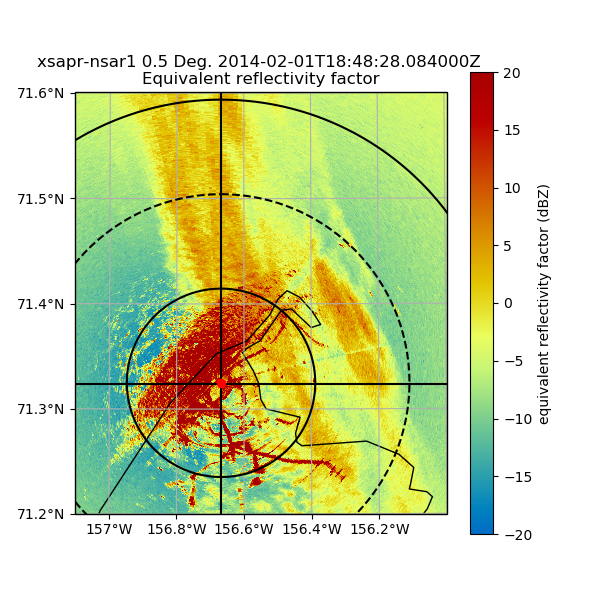

Create a PPI plot on a cartopy map¶
An example which creates a PPI plot of a file with a cartopy background and range rings
Python source code: plot_ppi_cartopy_with_rings.py
print(__doc__)
#Author: Jason Hemedinger
#License: BSD 3 clause
import numpy as np
import matplotlib.pyplot as plt
import cartopy.crs as ccrs
import pyart
# Read in the file, create a RadarMapDisplay object
filename = 'nsaxsaprppiC1.a1.20140201.184802.nc'
radar = pyart.io.read(filename)
display = pyart.graph.RadarMapDisplay(radar)
# Setting projection and ploting the second tilt
projection = ccrs.LambertConformal(central_latitude=radar.latitude['data'][0],
central_longitude=radar.longitude['data'][0])
fig = plt.figure(figsize=(6,6))
display.plot_ppi_map('reflectivity_horizontal', 1, vmin=-20, vmax=20,
min_lon=-157.1, max_lon=-156, min_lat=71.2, max_lat=71.6,
lon_lines=np.arange(-158, -154, .2), resolution='10m',
lat_lines=np.arange(69, 72, .1), projection=projection,
fig=fig, lat_0=radar.latitude['data'][0],
lon_0=radar.longitude['data'][0])
# Plot range rings at 10, 20, 30, 40km
display.plot_range_ring(10., line_style='k-')
display.plot_range_ring(20., line_style='k--')
display.plot_range_ring(30., line_style='k-')
display.plot_range_ring(40., line_style='k--')
# Plot cross hairs
display.plot_line_xy(np.array([-40000.0, 40000.0]), np.array([0.0, 0.0]),
line_style='k-')
display.plot_line_xy(np.array([0.0, 0.0]), np.array([-20000.0, 200000.0]),
line_style='k-')
# Indicate the radar location with a point
display.plot_point(radar.longitude['data'][0], radar.latitude['data'][0])
plt.show()
Total running time of the example: 4.10 seconds